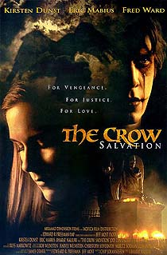

- club -
(Plus Shipping and Processing) CLUB MUSICA LATINA Learn about Club Musica Latina, Browse our catalog and Choose your CDs. .(Plus Shipping and Processing) Learn about the Music club, Browse our catalog and Choose your CDs. Members Enter Here Whether you joined by mail or online, Browse your personal store and Shop for special member deals. (Plus Shipping and Processing) Learn about the DVD club, Browse our catalog and Choose your DVDs.
Pending refunds may be applied towards purchases at your option. . THE CURRENT OWNER IS NO LONGER ABLE TO PROVIDE THIS SERVICE, AND A SATISFACTORY ARRANGEMENT WAS NOT ABLE TO BE MADE FOR A SALE OF THE CLUB. Any members that have current rentals pending at this time will be sent refunds, or payment will be returned. New members who still have pending rentals on their membership will receive a pro-rated refund on their balance.
Provisio provides this site as a community service at no charge to the consumer. . Video Club - Video Rentals - Charlottesville Video ClubPantops Shopping Center Charlottesville, VA 22911 (434) 979-5511 Thousands of Movies, Hundreds of Audio Books, Hundreds of Video Games. 00 per day after Books on Tape 50 cents per day See our main web site for more information. We rely solely on the businesses to notify us of changes.
It is based on the director's own memories of childhood at a Roman Catholic boarding school in Occupied France, the Jewish children its headmaster sheltered under assumed names, and what happened when the Gestapo came to call. . Classic Video Club - Film Data Sheet Au Revoir, Les Enfants Directed by Louis Malle France,1987. Film Review A slow-moving, intensely personal film that builds to a shattering climax of betrayal. It is based on the director's own memories of childhood at a Roman Catholic boarding school in Occupied France, the Jewish children its headmaster sheltered under assumed names, and what happened when the Gestapo came to call.
|  |
another club site: http://www.columbiahouse.com/cl1/ch/login?type=join&club=1&url=/welcome&dt=1021562554112&pin=71&bak=61&wl_sid=POPOulJkR6kHSRH5hIrEdCgviaim2ENgl425SWQLAmweKqYGNeNJ|-2354881258327994660/184419911/6/80/80/7002/7002/80/-1|-5100853426042541158/184419901/6/80/80/7002/7002/80/-1
.